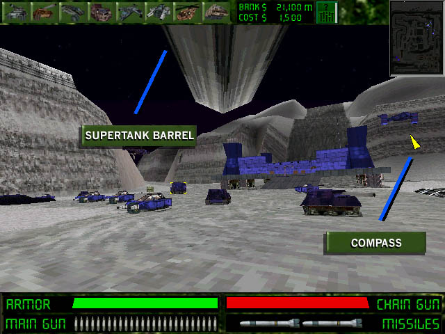

GOLGOTHA DEMO 5 README
- Action View -
| The "Action" or "First Person" View
|
For brute-force dominance over the battlefield, you will
need to command the supertank in a first-person view. To get to this view, first, you must
own a supertank. They're not cheap, but if you don't have one, you're going to be in bad shape.
You can buy one by clicking on the leftmost icon. To switch to first-person view, hit BACKSPACE
or TAB. You now should be looking through the view of the supertank, with the
tank's barrel at the top of the screen, and a compass pointer on the upper-right-hand side.
It should look something like this:

Drive around a little. We have a few key mappings. If you're used to 3D shooters, just try the arrow keys. There is no "fast" move, so SHIFT fires. But we've made a sort of Golgotha- optimized key-mapping which we really recommend learning so that your hands don't move from the kybd or mouse while you play. See the game's intro splash screen for those keys.
If you want to control your supertank from the Strategy View, that's fine, and it can be really handy for automatically navigating long distances, but your ability to dogfight goes out the window. You have to count on the computer to fire for you, and it may not make the right choices. The Action View can help you dodge, by using the strafing keys. You can aim better, and you can lead your targets. A really killer combo is to use both modes. Tell your supertank to go to the other side of the map in Strategy View, and then switch to Action View, and use the right mouse button to enjoy the elite privileges of being a totally free-moving turret on intelligent wheels!
But if you're in Action View and find yourself getting lost, refer to the compass to help you out. It will always be easier to navigate in the Strategy View, but the compass is there to help you.
A truly devastating control combination is to use the directional and strafing keys and to use the mouse with the right mouse button held down in order to aim and dance around your targets with deadly precision. You have also at your disposal an awesome arsenal. Even your lowly chain gun has so much ammunition that you're a terror even if that's your last remaining ammunition. The chain gun will automatically aim at whatever is within its firing radius. So just hold down the chain gun fire key and enjoy the wreckage. You have to aim the main gun, but what a weapon! You only have a couple dozen of these, but one or two rounds can kill literally anything on the field except another supertank. And last but certainly not least, you have two guided missiles. These split into three warheads and go after the nearest target in your view. We recommend saving these for the enemy supertank. He's certainly saving his for you. One hit with a single warhead will take out anything short of a supertank. If all three warheads hit, not even a supertank will survive. And watch out! His base is also automatically protected from your supertank by an endless stream of guided missiles. You probably won't survive that. Don't get too near his base with your supertank.
In the Action View, the supertank can wipe out entire formations of the enemy without even a scratch if you're good enough. But when you run out of health or ammunition, don't forget to head back to your base to refuel and repair. It's free, so it's almost always a worthwhile trip.
Beware the enemy supertank! In this demo especially, he will clean your clock with guided missiles first and ask questions later!
The Action View can also act as a somewhat limited substitute for the Strategy View in commanding other units. You can select a unit in this view with the left mouse button and direct it. In fact, you can even select your own supertank and tell it where to go in the Action View.
For some flashy graphics, select one of your formations twice, and you'll be in the Follow View. A much more dramatic view, and you can still control your units, but usually not as effective as Strategy and Action Views in the heat of battle. Hit TAB or BACKSPACE to get back to Strategy or Action View.
| Detailed Help Sections |
The following sections have more detailed help with labelled screenshots:
|
|
| Tons of Web Site Stuff
|
- Main Crack Page - Golgotha - Abuse - - Crack News - Press Releases - Corporate Information - Crack Employment Opportunities - - CrackCam - Employee Fingers - Homepages - Contact Crack - Crack Links -